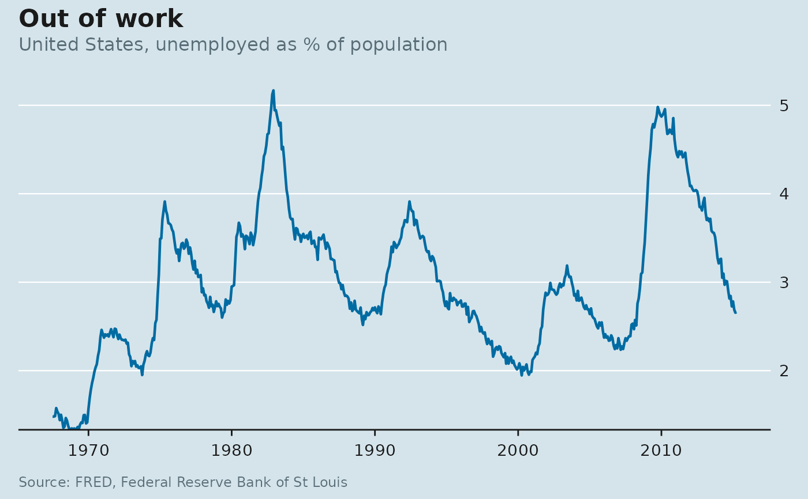

Reproduces the chart furniture of The Economist: a flat blue-grey panel with no border, horizontal gridlines only, a solid baseline with ticks on the x-axis, and left-aligned title, subtitle and caption that hang off the plot edge rather than the panel.
Arguments
- base_size
Base font size in points.
- base_family
Base font family.
""uses the device default.- panel
Panel style:
"blue"(the classic printed panel, the default),"white", or"dark".- grid
Which major gridlines to draw:
"y"(the default),"x","both"or"none".- legend_position
Passed to
ggplot2::theme(). Defaults to"top", left-justified and without a legend title.
Details
Two conventions are left to the caller because they depend on the data
rather than the style: put the units in the subtitle and drop the axis
titles with labs(x = NULL, y = NULL), and move the y-axis labels to the
right with scale_y_econ(). labs_econ() does the first for you.
The Economist sets in a proprietary face (Officina Sans / EconSans). This
theme does not ship or assume a font: base_family = "" means the device
default. Pass a family you actually have installed if you want to get
closer.
See also
scale_colour_econ() for matching colour scales,
econ_masthead() for the red block, and annotate_recessions() for
recession bands.
Examples
library(ggplot2)
ggplot(economics, aes(date, unemploy / pop * 100)) +
geom_line(colour = econ_colours("blue"), linewidth = 0.8) +
scale_y_econ() +
labs_econ(
title = "Out of work",
subtitle = "United States, unemployed as % of population",
source = "FRED, Federal Reserve Bank of St Louis"
) +
theme_econ()
